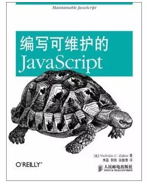

作为一名前端开发人员，如果你告诉我你没有看过任何关于前端的书籍，那么我完全可以认为你不是一名合格的前端开发工程师。为什么我要以“看书”来衡量合格前端的标准？因为前端作为一个特殊的极具变化与开拓性的工种，没有较强的自我学习与思考能力，很难在这激烈又纷杂的环境里存活而不被淘汰，而“看书”则是最基本的自我提升与补充知识的途径。
书中自有黄金屋。不管你是想涉猎前端抑或进行系统性的学习，我都推荐大家阅读前端的相关书籍。那么对于想扎实前端基础或者想突破技术瓶颈的童鞋来说我们应该挑选哪几把适合我们的书籍呢？下面我就推荐5本带我踏入前端并产生较大帮助的图书供大家参考。
书单1、Web前端开发最佳实践
这本书是前端开发领域的经典之作，是一本扎实前端基本功，规范我们前端代码的实践性书籍。本书主要讲解了HTML、CSS、Javascript以及移动端开发的最佳实践方案，能够对缺乏良好指导的开发者产生很大的帮助。通过阅读本书我们可以掌握如何编写高可读性、高维护性、高性能的HTML、CSS以及Javascript。
2、编写可维护的Javascript
本书是我极力推荐的一本帮助大家改善Javascript编程风格与编码规范的书籍。那么为什么我们要如此注重JS的编码规范？引用高德纳的一句话就是：程序是写给人读的，只是偶尔让计算机执行一下。
3、锋利的jQuery
这本书应该算是学习jQuery必读的一本书，也是讲解jQuery的经典之作。在正式学习这本书之前，你有必要先了解下原生Javascript，才能领悟jQuery其“write less， do more”的理念。本书深入浅出的介绍了jQuery的代码风格、选择器、事件及动画等，结合丰富的实例让读者能够快速理解与应用。
4、图解HTTP
作为和浏览器打交道的前端开发者，我们理应学习关于页面从请求开始到呈现的过程和实现方式，而这本书便是快速了解HTTP请求背后原理的不二之选。本书结合漫画图盘的形式讲解HTTP协议、工作机制、报文及状态码等，图文并茂，通俗易懂。
5、Javascript设计模式与开发实践
之所以把这本书放在最后是因为阅读这本书需要一定的Javascript基础与功底，当我们掌握了JS的语法与编码规范后再来翻阅此书，你会获得别样的收获。那么为什么我们要研究设计模式？使用设计模式能够给我们解决怎样的问题？
我想答案和小说家为什么很少从开始设计剧情，足球教练为什么也很少从头开始发明战术一样，他们总是沿袭了一些已经存在的模式来解决问题。
结语为什么那些工作没几年的人很快就遇到了自己的技术瓶颈？ 为什么那些工作了5年以上的人还写着一手难以维护的代码？我想在以上5本书中便可找到答案。
正所谓纸上得来终觉浅，绝知此事要躬行。除了从书中汲取我们所需的知识外，我们还需要将理论化为实践，亲自动手敲击键盘，从而加深并巩固书中的知识点，才能羽化而登仙。